0. Словарь
| Слово | Простыми словами |
|---|---|
| Клиент | Программа 1С на компьютере пользователя. Показывает форму, принимает нажатия. К базе доступа не имеет |
| Сервер | Часть 1С, где лежат данные и выполняются запросы. Справочники, документы, регистры есть только здесь |
| Тонкий клиент / веб-клиент | Тонкий — обычная программа 1С на компьютере. Веб — 1С в браузере. Оба — клиенты |
| Директива компиляции | Строка &... перед процедурой. Говорит, где процедура выполняется |
&НаКлиенте |
Процедура выполняется на компьютере пользователя |
&НаСервере |
Процедура выполняется на сервере и видит форму целиком |
&НаСервереБезКонтекста |
Процедура выполняется на сервере, но форму не видит. Всё нужное — через параметры |
&НаКлиентеНаСервереБезКонтекста |
Процедура собирается и для клиента, и для сервера. Вызывать можно отовсюду |
| Контекст формы | Сама форма: её реквизиты, элементы, данные. «Без контекста» = без формы |
| Вызов сервера | Переход клиент → сервер и обратно. Стоит времени, особенно по сети |
| Счётчик вызовов | Строка внизу окна 1С «Текущие вызовы / Накопленные вызовы». Показывает, сколько раз клиент ходил на сервер |
| Обработка | Объект конфигурации с формой и кодом, но без своих данных в базе. Удобна как песочница |
| Реквизит формы | Данные формы: переменная, которая живёт вместе с формой. В коде — по имени |
| Элемент формы | То, что видно на экране: поле, кнопка, группа. В коде — Элементы.Имя |
| Команда формы | Действие формы. У неё есть обработчик в модуле. Кнопка — только её изображение |
| Обработчик | Процедура, которая срабатывает на событие: нажатие кнопки, открытие формы |
| Параметр | Значение, которое передают в процедуру или функцию при вызове |
Знач |
Параметр передаётся копией: процедура не может изменить переменную того, кто её вызвал |
| Процедура / Функция | Процедура делает работу. Функция делает работу и возвращает ответ через Возврат |
| Область | #Область Имя … #КонецОбласти — именованный кусок модуля. Сворачивается, на работу кода не влияет |
СообщениеПользователю |
Объект для вывода сообщения пользователю. Замена устаревшего Сообщить() |
| Quick Diff | Подсветка в EDT у номеров строк: что изменилось с последнего коммита |
1. Что это, зачем, где найти
Какую проблему решаем
Вся глава 5 — про печатные формы. Печатная форма — это код формы и код на сервере, который заполняет документ для печати. Прежде чем его писать, нужно понять главное правило 1С: код формы выполняется в двух местах, и в каждом доступно своё.
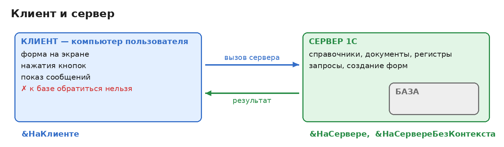
Аналогия: клиент — официант в зале, сервер — кухня.
- Официант принимает заказ и подаёт блюдо, но готовить в зале не может.
- Каждый поход на кухню — время.
&НаСервере— официант несёт на кухню весь стол со всем, что на нём стоит.&НаСервереБезКонтекста— относит только записку с заказом.
Файловая база — всё равно клиент и сервер
У тебя база Uchebnaya_dev лежит на твоём Mac, и кажется, что сервера нет. Он есть — внутри того же приложения 1С. Граница та же, правила те же.
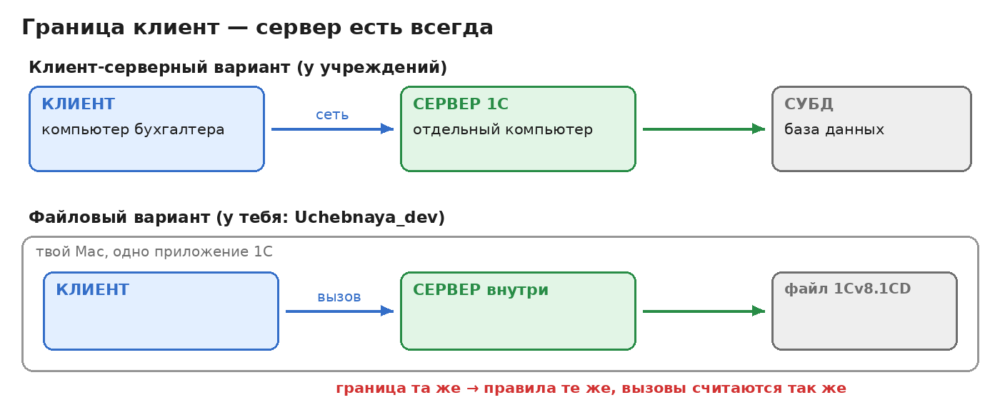
Почему так сделано: один и тот же код должен работать и в файловой базе разработчика, и на сервере учреждения. Если бы в файловом режиме клиент мог ходить в базу напрямую, ты бы написал код, который у клиента сломается.
Разница только в скорости. У тебя вызов сервера почти мгновенный, у клиента он идёт по сети. Поэтому лишние вызовы ты у себя не заметишь, а у клиента они будут тормозить.
Что где доступно
| Клиент | Сервер с контекстом | Сервер без контекста | |
|---|---|---|---|
| Справочники, документы, запросы | ✗ | ✓ | ✓ |
| Реквизиты формы по имени | ✓ | ✓ | ✗ — только через параметры |
Элементы формы |
✓ | ✓ | ✗ |
| Сообщения пользователю | ✓ | ✓ | ✓ |
| Что передаётся при вызове | — | вся форма туда и обратно | только параметры и ответ |
Как выбрать директиву
| Нужно | Директива |
|---|---|
| Только работа с формой: показать, посчитать, сообщить | &НаКлиенте |
| Сходить в базу, форма серверу не нужна | &НаСервереБезКонтекста — по умолчанию |
Серверу нужна форма целиком: заполнить табличную часть, работать с Объект |
&НаСервере — только тогда |
Как это работает внутри
Что происходит при нажатии кнопки «Найти без контекста»:
- Пользователь нажимает кнопку на своём компьютере.
- Выполняется клиентский обработчик команды
НайтиБезКонтекста(&НаКлиенте). - Он вызывает серверную функцию и передаёт ей значение поля:
НайтиБезКонтекстаНаСервере(Наименование). Счётчик вызовов +1. - На сервер уходит одна строка
"Мышь". - Сервер ищет товар в справочнике и возвращает строку ответа через
Возврат. - Клиент записывает ответ в реквизит
Результат, и поле на форме обновляется.
2. Как сделать
Карта шагов
Этап 1. Делаем песочницу (шаги 1–4)
| Шаг | Что делаем | Зачем |
|---|---|---|
| 1 | Создаём обработку ПесочницаКлиентСервер |
Нужна форма с кнопками, документы не трогаем |
| 2 | Добавляем форму | Код клиента и сервера живёт в модуле формы |
| 3 | Реквизиты и поля | Куда вводить наименование и куда писать ответ |
| 4 | Три команды и кнопки | По кнопке на каждый способ вызова |
Этап 2. Разбираем три способа (шаги 5–9)
| Шаг | Что делаем | Зачем |
|---|---|---|
| 5 | Создаём обработчики через EDT | Видим, что EDT предлагает и что создаёт |
| 6 | Пробуем базу на клиенте | Видим главное правило: на клиенте базы нет |
| 7 | Кнопка «Найти на клиенте» | Что можно на клиенте, счётчик не растёт |
| 8 | Кнопка «Найти без контекста» | Правильный способ сходить в базу |
| 9 | Кнопка «Найти на сервере» | Сервер с формой, сравнение с «без контекста» |
Этап 3. Приводим в порядок (шаги 10–11)
| Шаг | Что делаем | Зачем |
|---|---|---|
| 10 | Области в модуле | Так устроены модули всех типовых |
| 11 | СообщениеПользователю вместо Сообщить |
Убираем устаревший метод |
Шаг 1. Обработка-песочница
Зачем. Чтобы разобрать клиент и сервер, нужна форма с кнопками. Обработка — объект с формой и кодом, но без своих данных в базе. Идеальная песочница: ничего не сломаешь.
Что получим. Обработку ПесочницаКлиентСервер в разделе «Товары».
Что делаем. Навигатор → Uchebnaya → правый клик по «Обработки» → «Создать» → «Обработка».
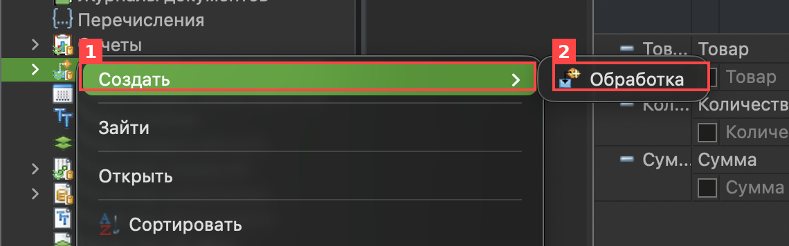
| № | Что это |
|---|---|
| 1 | «Создать» в контекстном меню ветки «Обработки» |
| 2 | «Обработка» |
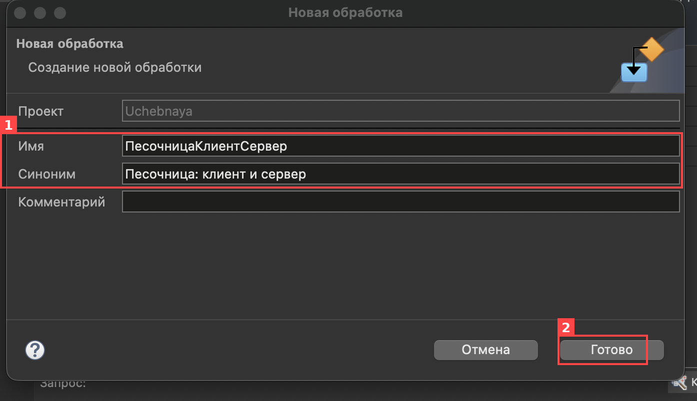
| № | Что это |
|---|---|
| 1 | Имя ПесочницаКлиентСервер и синоним «Песочница: клиент и сервер». Синоним увидит пользователь |
| 2 | «Готово» |
Почему новая, а не старая Песочница: в старой одна кнопка и весь код на сервере, плюс твои тесты общих модулей. Опыты перемешаются, а в конспекте нужен чистый пример.
Подсистема. В редакторе обработки вкладка «Подсистемы» → отметить «Товары».
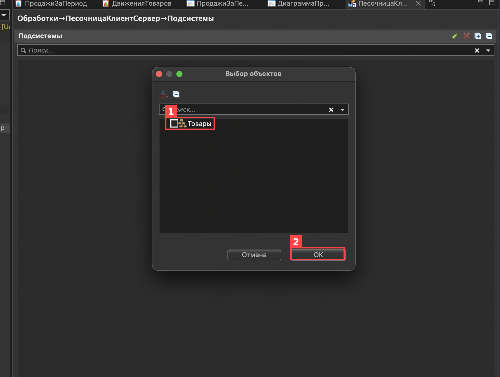
| № | Что это |
|---|---|
| 1 | «Товары» — других подсистем в Uchebnaya нет. «Главное» — начальная страница, а не подсистема |
| 2 | «ОК» |
Без подсистемы обработку не видно в интерфейсе — как с отчётами в главе 4.
Шаг 2. Форма обработки
Зачем. Код с директивами &НаКлиенте и &НаСервере пишется в модуле формы. Без формы обработку не открыть.
Что получим. Редактор формы: элементы, реквизиты, команды и модуль.
Что делаем. Редактор обработки → вкладка «Формы» → кнопка добавления формы.
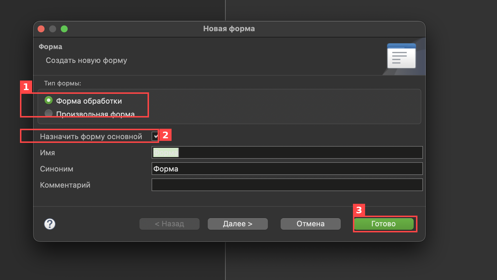
| № | Что это |
|---|---|
| 1 | «Форма обработки» — в ней сразу есть реквизит Объект, сама обработка |
| 2 | «Назначить форму основной» — она откроется при запуске обработки |
| 3 | «Готово» |
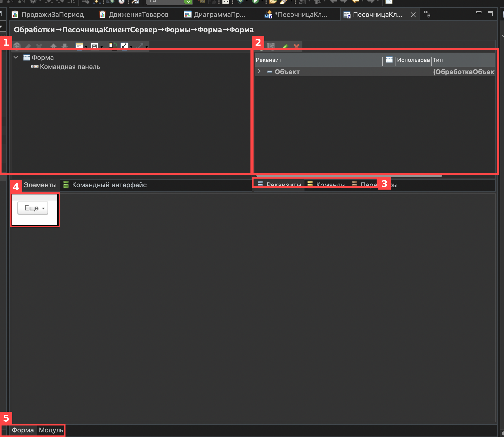
| № | Что это |
|---|---|
| 1 | Дерево элементов — то, что видно на экране. Пока только «Командная панель» |
| 2 | Реквизиты — данные формы. Объект есть всегда |
| 3 | Вкладки «Реквизиты», «Команды», «Параметры» |
| 4 | Предпросмотр формы — пока только кнопка «Ещё» |
| 5 | Вкладки «Форма» (внешний вид) и «Модуль» (код) |
Шаг 3. Реквизиты и поля
Зачем. Нужно место, куда пользователь вводит название товара, и место, куда код пишет ответ.
Что получим. Два поля на форме: «Наименование» и «Результат».
Что делаем. Вкладка «Реквизиты» → добавить Наименование (строка, 100) и Результат (строка, 200).
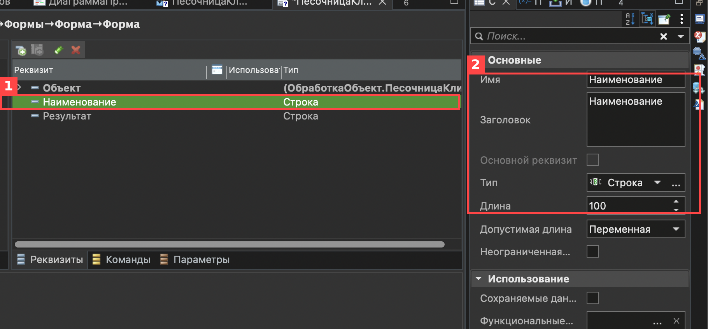
| № | Что это |
|---|---|
| 1 | Реквизит Наименование в списке |
| 2 | Свойства: имя, заголовок, тип «Строка», длина 100 |
Перетащить оба реквизита мышью в дерево элементов.
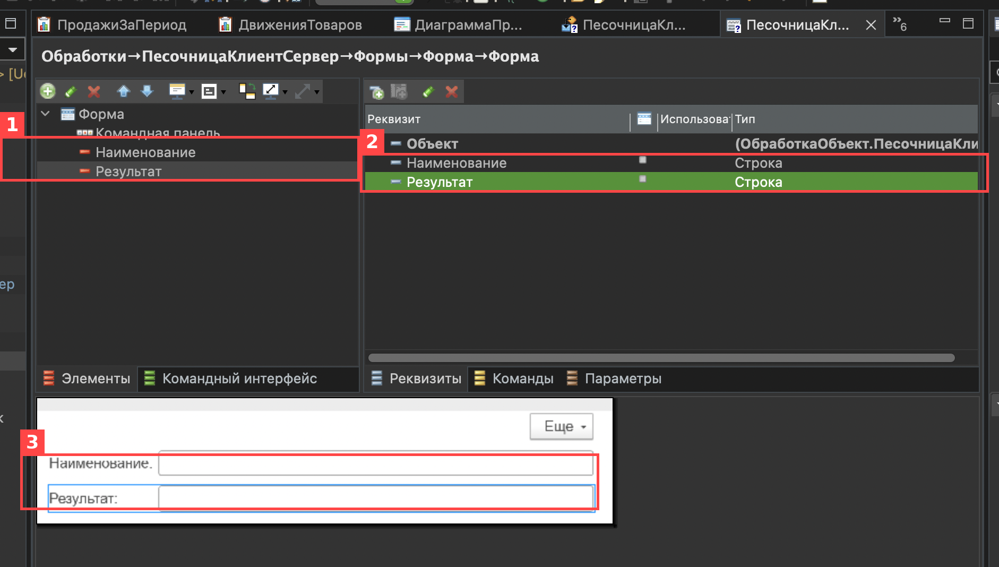
| № | Что это |
|---|---|
| 1 | Элементы Наименование и Результат в дереве |
| 2 | Реквизиты в списке — у них появилась отметка «используется» |
| 3 | Поля в предпросмотре |
Реквизит и элемент — разные вещи. Поле на экране — элемент. Данные за ним — реквизит. Имя у них часто одинаковое.
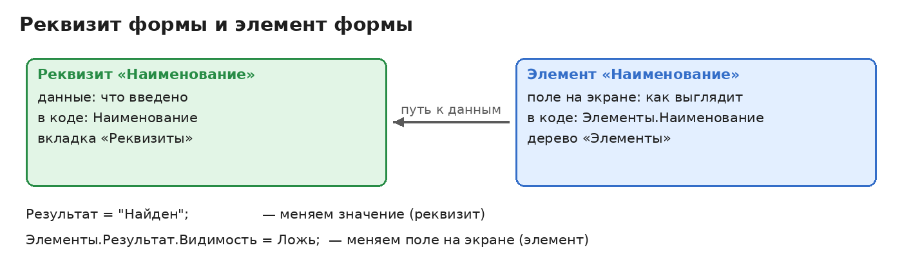
Если реквизит есть, а на форму его не вытащили, в коде он всё равно доступен по имени: данные есть, просто поля на экране нет.
Приём: поля в строку. Добавить группу «Данные» и поставить ей «Группировка» — «Горизонтальная». Поля встанут рядом.
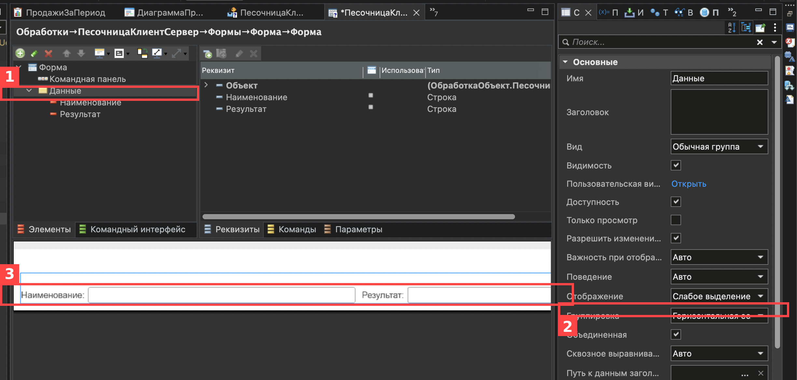
| № | Что это |
|---|---|
| 1 | Группа «Данные», поля внутри неё |
| 2 | Свойство «Группировка» — «Горизонтальная, если возможно» |
| 3 | Поля в одну строку |
«Только просмотр» у результата. Поле Результат заполняет код, а не пользователь.
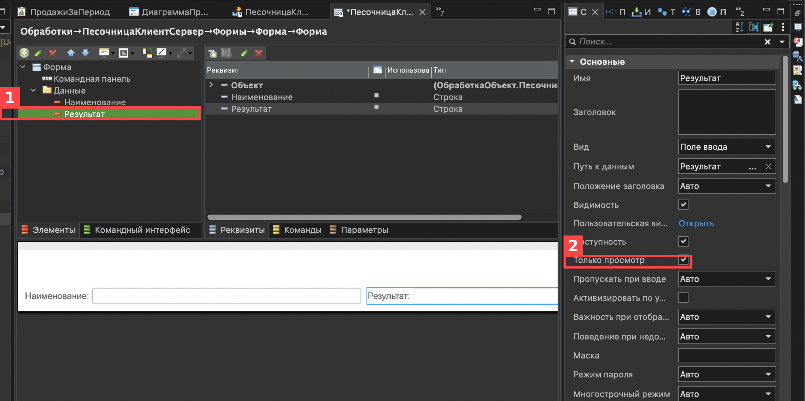
| № | Что это |
|---|---|
| 1 | Элемент Результат |
| 2 | Галка «Только просмотр» |
Шаг 4. Три команды и кнопки
Зачем. По кнопке на каждый способ вызова, чтобы сравнить их на одной форме.
Что получим. Три кнопки: «Найти на сервере», «Найти на клиенте», «Найти без контекста».
Что делаем. Вкладка «Команды» → добавить НайтиНаКлиенте, НайтиНаСервере, НайтиБезКонтекста. Перетащить в дерево элементов. Для красоты — в горизонтальную группу.
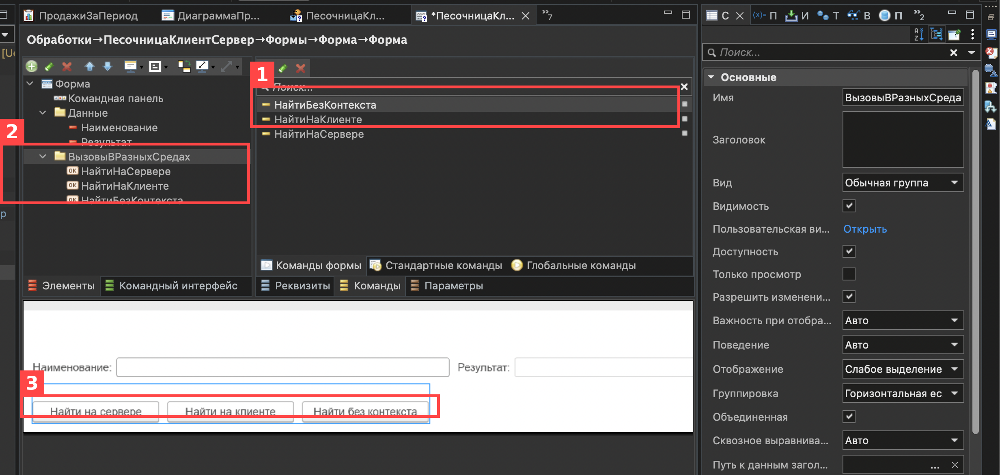
| № | Что это |
|---|---|
| 1 | Три команды формы |
| 2 | Кнопки в горизонтальной группе ВызовыВРазныхСредах |
| 3 | Кнопки в предпросмотре |
Команда и кнопка:
Команда «НайтиНаСервере» ──► обработчик в модуле: Процедура НайтиНаСервере(Команда)
│
└──► кнопка на форме (элемент)
Одну команду можно вывести и кнопкой, и пунктом меню «Ещё».
Шаг 5. Обработчики через EDT
Зачем. Увидеть, какие варианты обработчика предлагает EDT и что он создаёт для каждого. Это и есть три способа из задачи.
Что получим. Пять процедур в модуле: три клиентских обработчика и две серверных пары.
Что делаем. Выделить команду → свойство «Действие» → лупа. Стрелка рядом показывает только уже готовые процедуры, а модуль пока пустой.
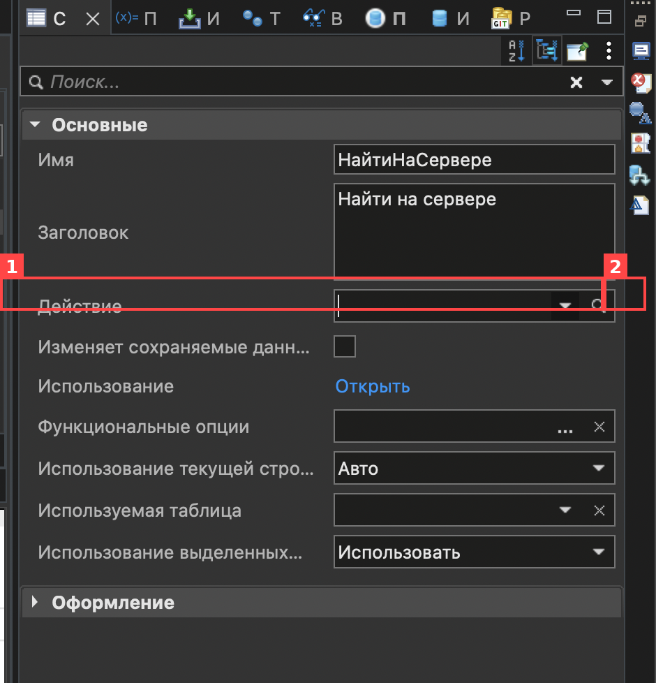
| № | Что это |
|---|---|
| 1 | Поле «Действие» — пока пустое |
| 2 | Лупа — создать обработчик |
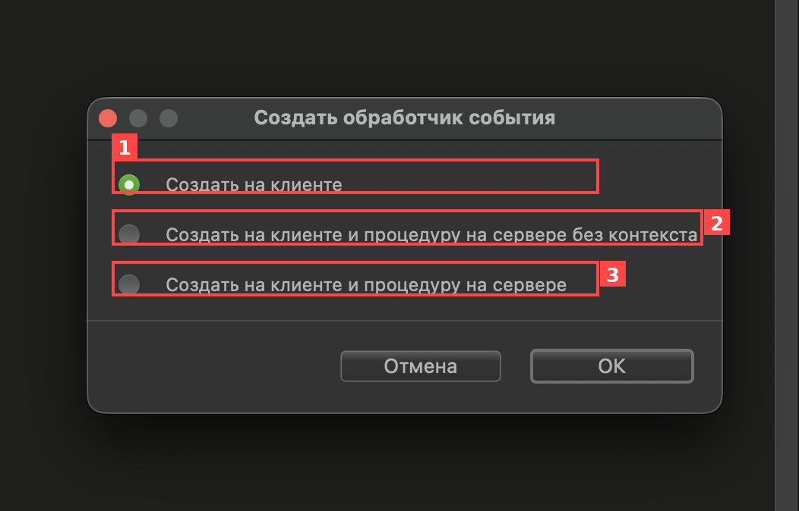
| № | Что это |
|---|---|
| 1 | «Создать на клиенте» — для НайтиНаКлиенте |
| 2 | «…и процедуру на сервере без контекста» — для НайтиБезКонтекста |
| 3 | «…и процедуру на сервере» — для НайтиНаСервере |
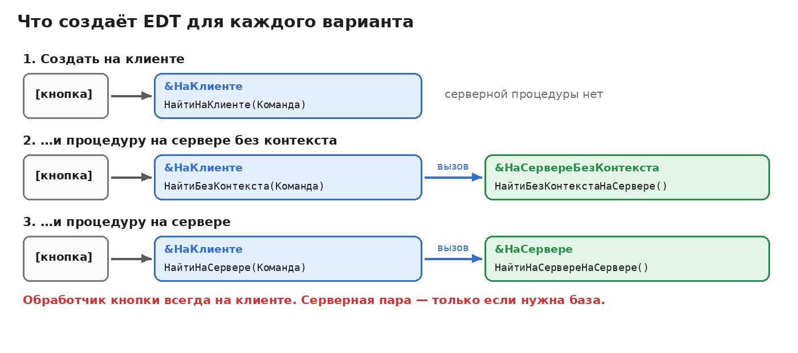
Обработчик кнопки всегда &НаКлиенте: кнопку нажимают на компьютере пользователя. Для вариантов 2 и 3 EDT добавляет серверную процедуру и сразу вписывает её вызов в клиентский обработчик.
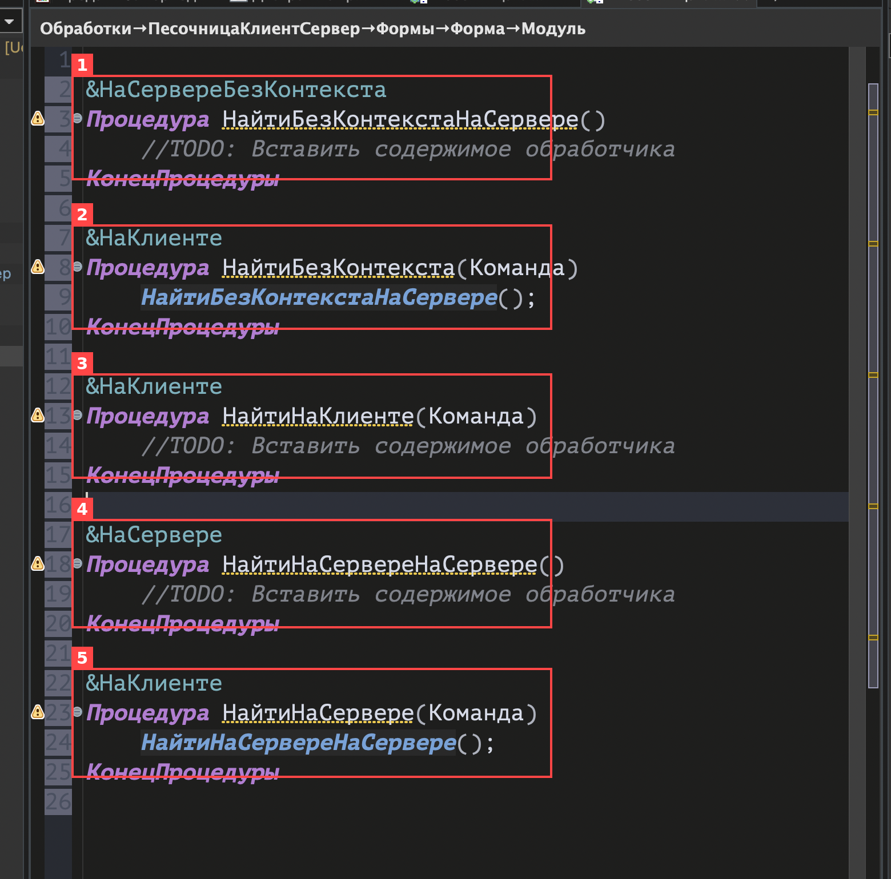
| № | Что это |
|---|---|
| 1 | Серверная процедура НайтиБезКонтекстаНаСервере (&НаСервереБезКонтекста) |
| 2 | Клиентский обработчик НайтиБезКонтекста — вызывает №1 |
| 3 | Клиентский обработчик НайтиНаКлиенте — без серверной пары |
| 4 | Серверная процедура НайтиНаСервереНаСервере (&НаСервере) |
| 5 | Клиентский обработчик НайтиНаСервере — вызывает №4 |
Жёлтые треугольники у процедур — EDT предупреждает о пустых процедурах с //TODO. Пропадут, когда появится код.
Шаг 6. База на клиенте — ошибка
Зачем. Увидеть главное правило главы: на клиенте нет базы. EDT ловит это ещё до запуска.
Что получим. Красную ошибку и понимание, куда переносить такой код.
Что делаем. В НайтиНаКлиенте написать поиск товара:
Товар = Справочники.Товары.НайтиПоНаименованию(Наименование);
Результат = ?(Товар.Пустая(), "Не найден", "Найден: " + Товар);
НайтиПоНаименованиюищет элемент справочника с таким наименованием. Не нашёл — возвращает пустую ссылку;?(условие, если да, если нет)— короткое «если», какВЫБОРв запросе.
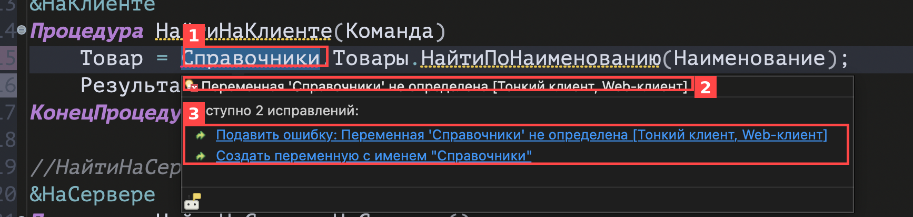
| № | Что это |
|---|---|
| 1 | Справочники подчёркнуто красным |
| 2 | «Переменная 'Справочники' не определена [Тонкий клиент, Web-клиент]» — в клиентском коде этого слова нет. В скобках — где EDT проверял |
| 3 | Предложенные исправления. Оба неправильные |
| Исправление EDT | Что будет |
|---|---|
| «Подавить ошибку» | Ошибка спрячется в EDT, но выскочит у пользователя при нажатии |
| «Создать переменную» | Появится пустая переменная Справочники, товар всё равно не найдётся |
Правильно — перенести поиск на сервер (шаги 8 и 9). В НайтиНаКлиенте оставляем только то, что можно на клиенте.
Шаг 7. Кнопка «Найти на клиенте»
Зачем. Показать, что на клиенте можно: читать поля формы, писать в них, выводить сообщения.
Что получим. Кнопку, которая работает без единого вызова сервера.
Что делаем.
&НаКлиенте
Процедура НайтиНаКлиенте(Команда)
Сообщить("Работает на клиенте. Наименование: " + Наименование);
Результат = "Ответ с клиента: " + Наименование;
КонецПроцедуры
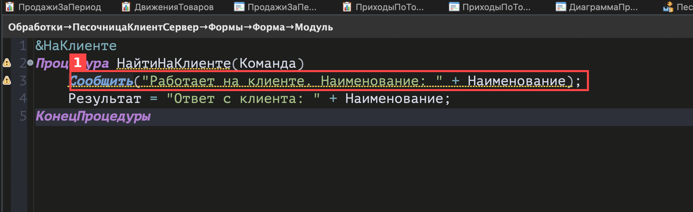
| № | Что это |
|---|---|
| 1 | Сообщить — работает, но EDT предупреждает: метод не рекомендуется. Заменим в шаге 11 |
Запуск: «Выполнить как» → «Тонкий клиент» → «Товары» → «Песочница: клиент и сервер».
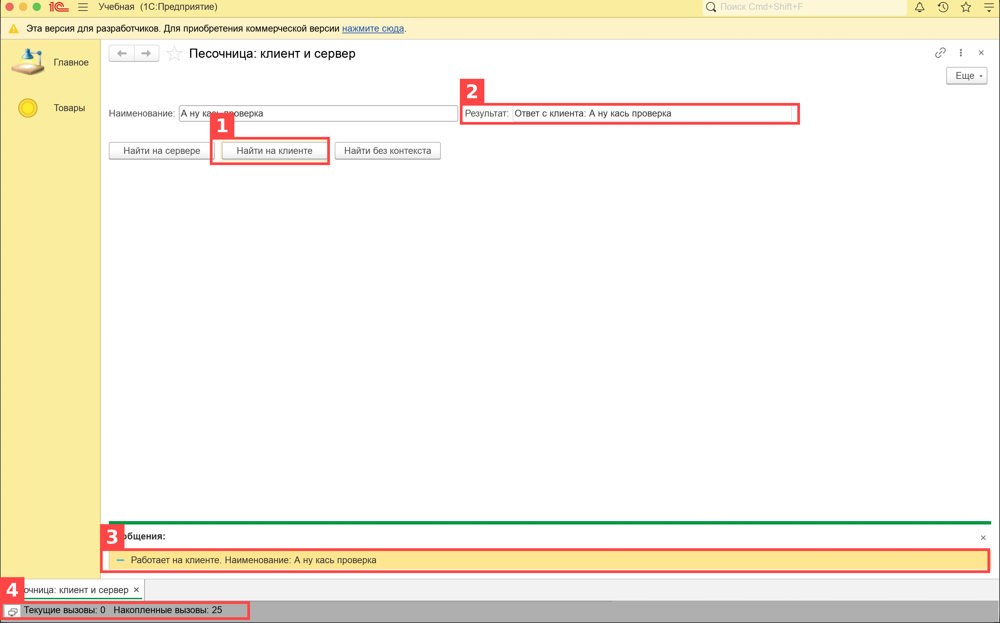
| № | Что это |
|---|---|
| 1 | Кнопка «Найти на клиенте» |
| 2 | Ответ в поле «Результат» |
| 3 | Сообщение внизу формы |
| 4 | Счётчик вызовов: 25 — это открытие раздела и формы |
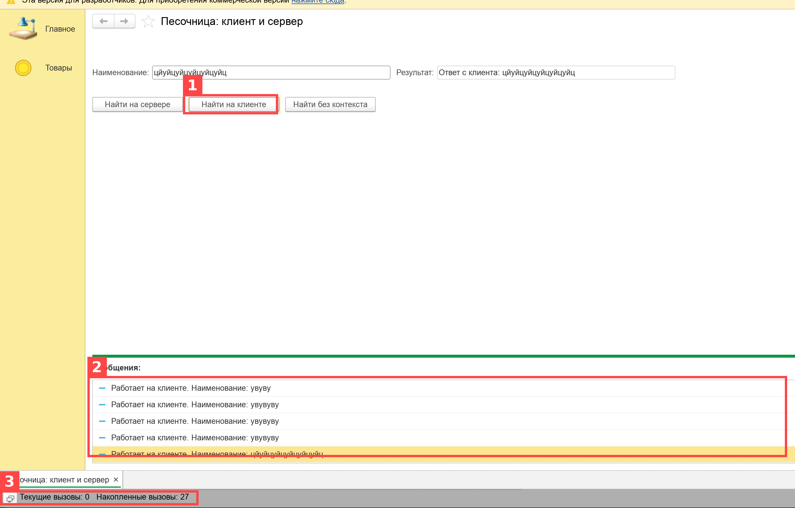
| № | Что это |
|---|---|
| 1 | Кнопка нажата ещё несколько раз |
| 2 | Сообщения от каждого нажатия |
| 3 | Счётчик не изменился от нажатий: кнопка ни разу не обратилась к серверу |
Счётчик растёт, только если закрыть форму и открыть снова: форма создаётся на сервере и отправляется клиенту.
Открыть форму КЛИЕНТ ──── «дай форму» ────► СЕРВЕР счётчик +
◄─── готовая форма ───
Найти на клиенте КЛИЕНТ (всё сам) счётчик не меняется
Шаг 8. Кнопка «Найти без контекста»
Зачем. Правильный способ сходить в базу: на сервер уходит только наименование, обратно — только ответ.
Что получим. Функцию на сервере с параметром и Возврат, кнопку, которая ищет товар.
Разбор: на сервере без контекста формы нет. Сначала в серверную процедуру перенесли поиск как есть:
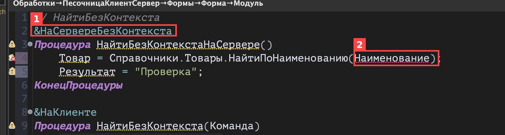
| № | Что это |
|---|---|
| 1 | Директива &НаСервереБезКонтекста |
| 2 | Наименование подчёркнуто красным — реквизита формы здесь нет |
Разбор: тихая ошибка. Ещё хуже — записать в реквизит формы:
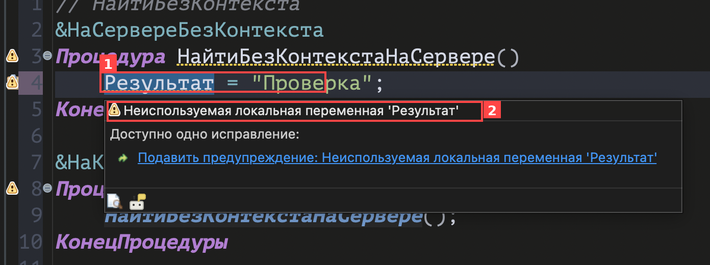
| № | Что это |
|---|---|
| 1 | Результат = "Проверка" — подчёркнуто только жёлтым |
| 2 | «Неиспользуемая локальная переменная 'Результат'» |
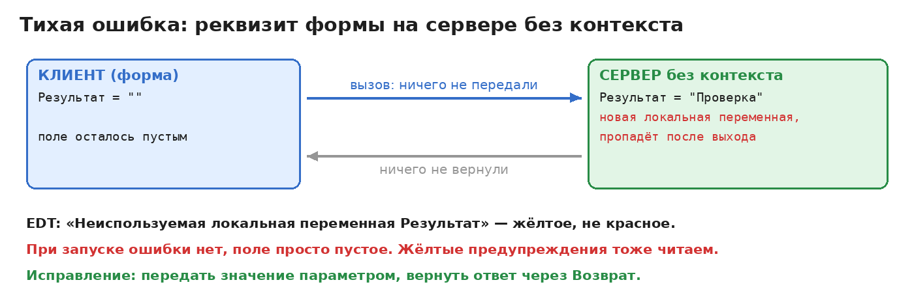
EDT не знает никакого реквизита Результат и считает, что ты создаёшь новую локальную переменную. Она живёт только внутри процедуры и пропадает после выхода. При запуске ошибки нет — поле просто пустое.
Справочники на клиенте |
Результат без контекста |
|
|---|---|---|
| Что показывает EDT | Красная ошибка | Жёлтое предупреждение |
| При запуске | Ошибка у пользователя | Ошибки нет, поле пустое |
| Насколько опасно | Видно сразу | Тихая ошибка, легко пропустить |
Решение — параметр туда, Возврат обратно. Без контекста всё нужное передаём параметром, а ответ возвращаем. Пишет ответ в поле клиент: у него форма есть.
EDT создал пару с пустой процедурой без параметров:
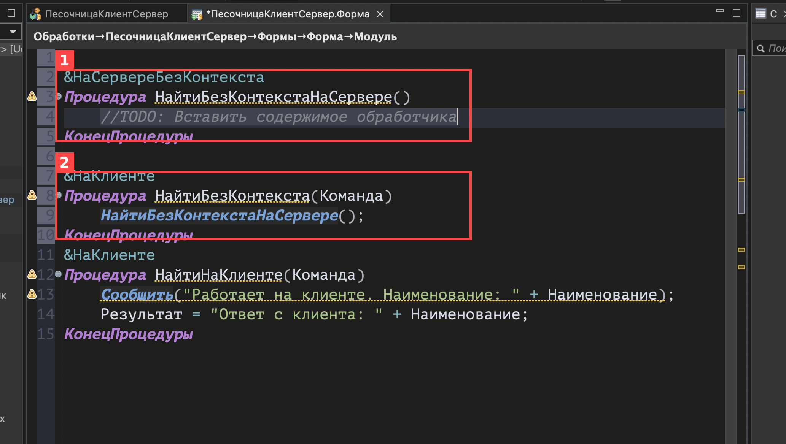
| № | Что это |
|---|---|
| 1 | Серверная процедура — без параметров и без возврата |
| 2 | Клиентский обработчик — вызывает её без параметров |
Разбор: процедура вместо функции. Добавили параметр и Возврат, но оставили слово Процедура:
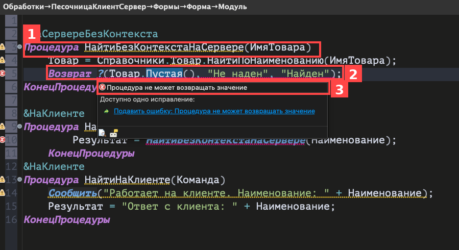
| № | Что это |
|---|---|
| 1 | Процедура с параметром ИмяТовара |
| 2 | Возврат со значением |
| 3 | Ошибка: процедура ничего не возвращает |
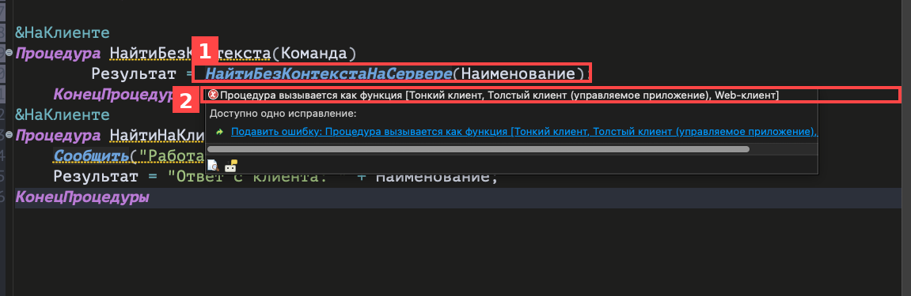
| № | Что это |
|---|---|
| 1 | Результат = НайтиБезКонтекстаНаСервере(...) — ждём ответ |
| 2 | Ошибка: у процедуры ответа нет |
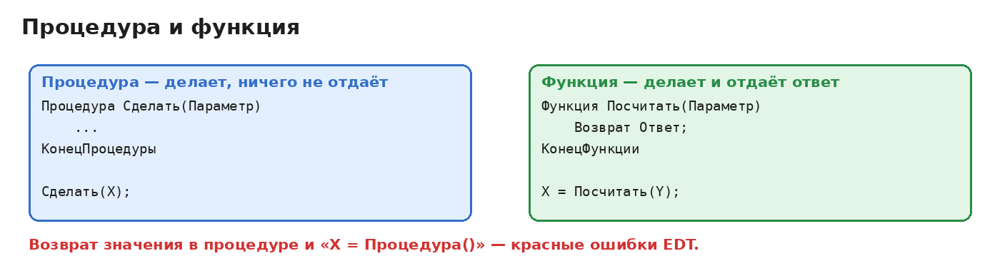
Обе красные ошибки — из-за одного слова. Исправление:
&НаСервереБезКонтекста
Функция НайтиБезКонтекстаНаСервере(ИмяТовара)
Товар = Справочники.Товары.НайтиПоНаименованию(ИмяТовара);
Возврат ?(Товар.Пустая(), "Не найден", "Найден без контекста: " + Товар);
КонецФункции
&НаКлиенте
Процедура НайтиБезКонтекста(Команда)
Результат = НайтиБезКонтекстаНаСервере(Наименование);
КонецПроцедуры
| Строка | Что делает |
|---|---|
Функция … (ИмяТовара) |
Функция с параметром. В ИмяТовара придёт то, что передал клиент |
Справочники.Товары.НайтиПоНаименованию(ИмяТовара) |
Поиск на сервере — здесь справочники есть |
Возврат … |
Отдаёт строку обратно на клиент |
КонецФункции |
Пара к Функция, не КонецПроцедуры |
Результат = НайтиБезКонтекстаНаСервере(Наименование) |
Клиент передаёт значение поля и пишет ответ в реквизит |
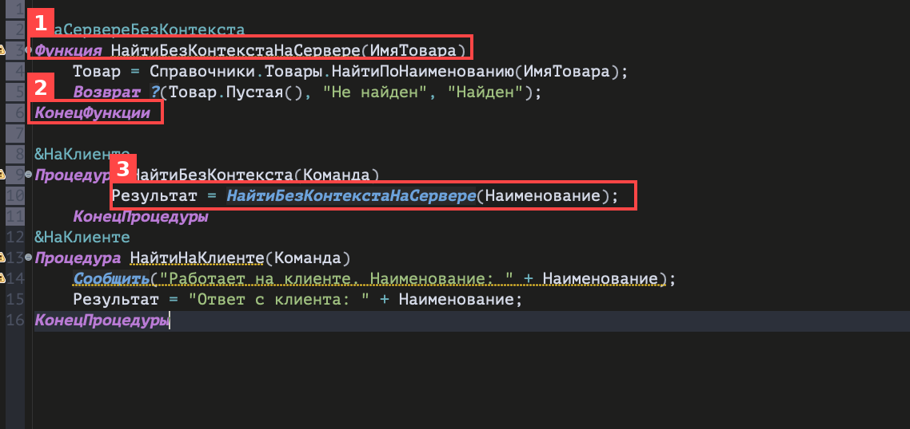
| № | Что это |
|---|---|
| 1 | Функция с параметром |
| 2 | КонецФункции |
| 3 | Вызов с передачей Наименование и записью ответа в Результат |
Проверка.
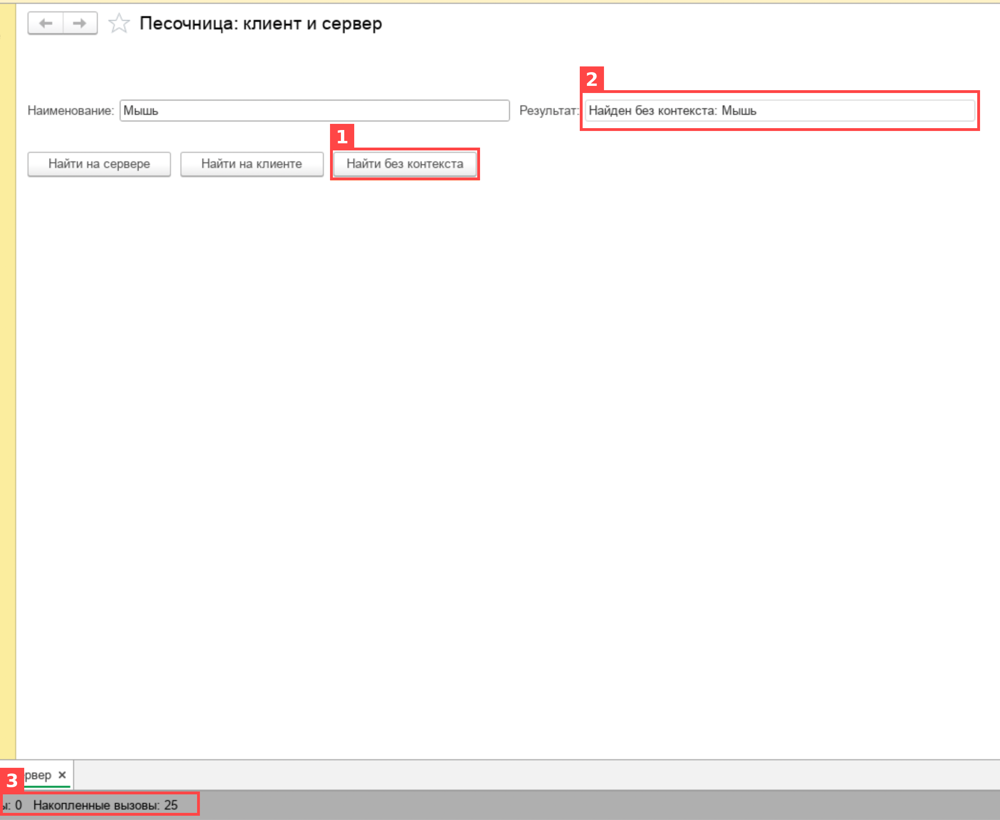
| № | Что это |
|---|---|
| 1 | Кнопка «Найти без контекста» |
| 2 | «Найден без контекста: Мышь» |
| 3 | Счётчик вызовов |
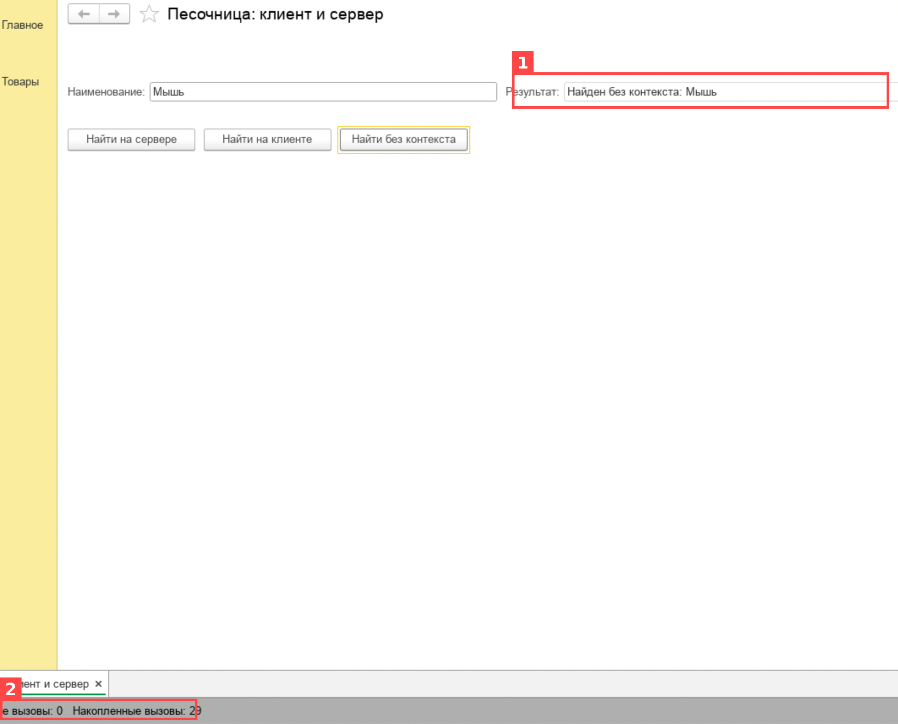
| № | Что это |
|---|---|
| 1 | Тот же ответ |
| 2 | Счётчик вырос: одно нажатие — один вызов сервера |
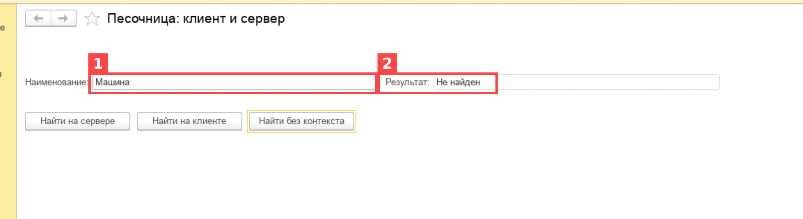
| № | Что это |
|---|---|
| 1 | «Машина» — такого товара в справочнике нет |
| 2 | «Не найден» — НайтиПоНаименованию вернул пустую ссылку |
[Найти без контекста]
КЛИЕНТ: Результат = НайтиБезКонтекстаНаСервере("Мышь")
│ "Мышь" ──────────────► СЕРВЕР: ищет в справочнике счётчик +1
│ ◄── "Найден без контекста: Мышь"
КЛИЕНТ: пишет ответ в поле «Результат»
Шаг 9. Кнопка «Найти на сервере»
Зачем. Третий способ: сервер получает форму целиком и сам читает и пишет её поля. Код проще — без параметров и возврата. Но вся форма ходит туда и обратно.
Что получим. Процедуру на сервере, которая работает с полями формы напрямую.
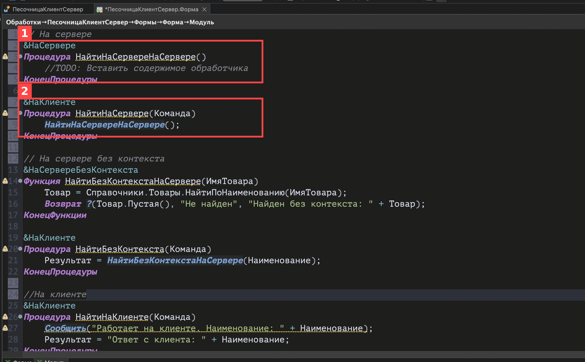
| № | Что это |
|---|---|
| 1 | Серверная процедура НайтиНаСервереНаСервере с &НаСервере |
| 2 | Клиентский обработчик вызывает её без параметров |
Что делаем.
&НаСервере
Процедура НайтиНаСервереНаСервере()
Товар = Справочники.Товары.НайтиПоНаименованию(Наименование);
Результат = ?(Товар.Пустая(), "Не найден", "Найден на сервере: " + Товар);
КонецПроцедуры
Сравни с «без контекста»: там ИмяТовара и Возврат, здесь прямо поля формы Наименование и Результат.
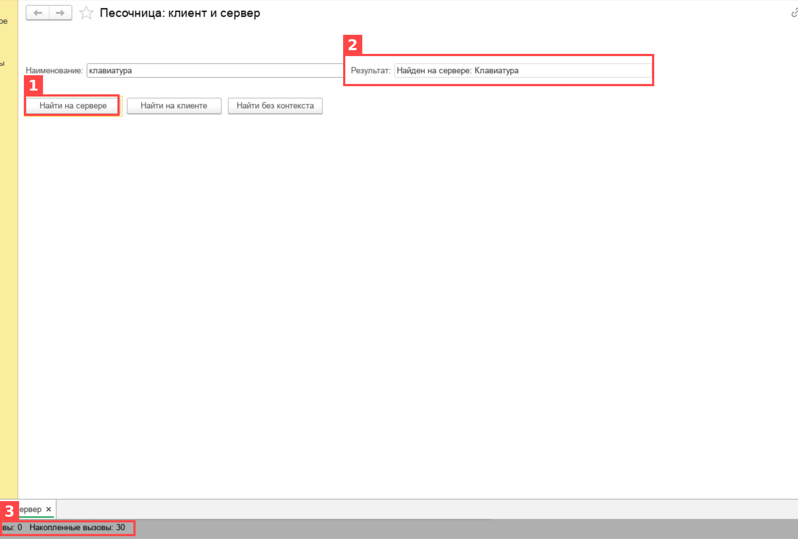
| № | Что это |
|---|---|
| 1 | Кнопка «Найти на сервере» |
| 2 | «клавиатура» с маленькой буквы нашлась: НайтиПоНаименованию не различает регистр |
| 3 | Счётчик +1 за нажатие — как у «без контекста» |
Главное сравнение. У двух серверных кнопок счётчик растёт одинаково. Разница не в количестве вызовов, а в объёме каждого. Счётчик этого не показывает.
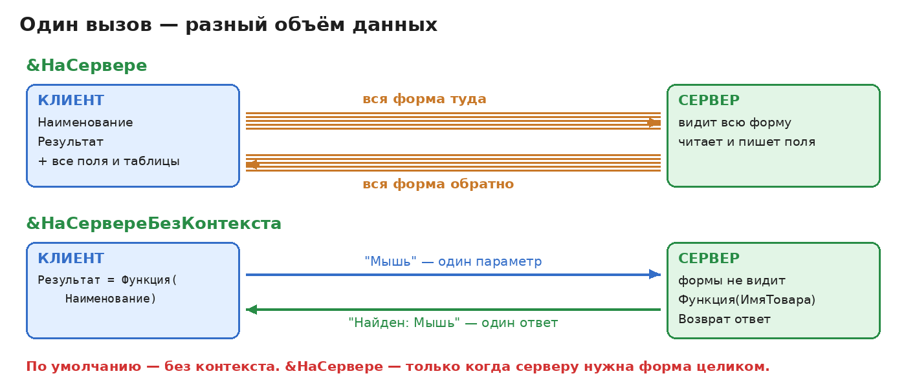
| Кнопка | Вызовов | Что идёт на сервер | Что обратно |
|---|---|---|---|
| Найти на клиенте | 0 | — | — |
| Найти без контекста | 1 | одна строка | одна строка |
| Найти на сервере | 1 | вся форма | вся форма |
На форме из двух полей разницы не заметить. На форме документа со 100 строками товаров &НаСервере ради одного поиска отправит всю таблицу.
Шаг 10. Области в модуле
Зачем. Пока процедуры разложены по кнопкам. В типовых модуль формы делят на области по назначению: вверху — что делают кнопки, внизу — как это сделано. Так устроены модули ЗГУ и БГУ, так требует стандарт.
Что получим. Две области, каждая сворачивается в одну строку.
Что делаем. Ввести #Область ОбработчикиКомандФормы, перенести под неё три клиентских обработчика, закрыть #КонецОбласти. Ниже — #Область СлужебныеПроцедурыИФункции с серверными процедурами.
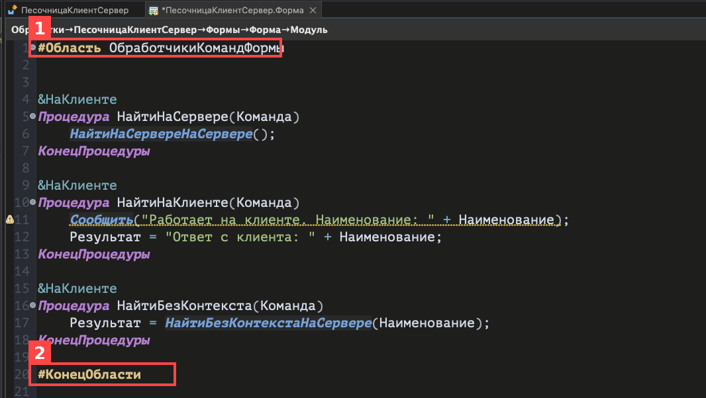
| № | Что это |
|---|---|
| 1 | #Область ОбработчикиКомандФормы — начало, слева значок сворачивания |
| 2 | #КонецОбласти |
#Область ОбработчикиКомандФормы ← что делают кнопки (клиент)
#Область СлужебныеПроцедурыИФункции ← как это сделано (сервер)
Разбор: скопировал вместо вырезать. При переносе процедура осталась и внизу модуля. Две процедуры с одним именем — ошибка: 1С не поймёт, какую вызывать. Переносить — Cmd+X, а не Cmd+C.
Шаг 11. СообщениеПользователю вместо Сообщить
Зачем. Сообщить() — старый способ из обычных форм. В управляемых формах стандарт требует объект СообщениеПользователю.
Что получим. Модуль без предупреждений и свою процедуру вывода сообщений.
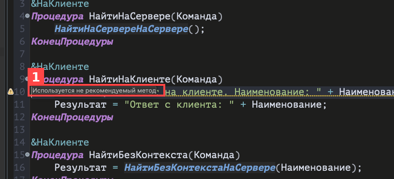
Сообщить| № | Что это |
|---|---|
| 1 | «Используется не рекомендуемый метод» |
Сообщить("текст") |
СообщениеПользователю |
|
|---|---|---|
| Что умеет | Только текст | Текст + привязка к полю: клик по сообщению ставит курсор в поле |
| По стандарту | Не рекомендуется | Рекомендуется |
| В типовых с БСП | — | Обёртка ОбщегоНазначенияКлиент.СообщитьПользователю(...) |
Своя процедура вывода. Три строки повторять в каждой процедуре неудобно — выносим в одну, как делает БСП:
&НаКлиентеНаСервереБезКонтекста
Процедура Вывести(Знач Данные)
Сообщение = Новый СообщениеПользователю;
Сообщение.Текст = Данные;
Сообщение.Сообщить();
КонецПроцедуры
| Строка | Что делает |
|---|---|
&НаКлиентеНаСервереБезКонтекста |
Процедура собирается и для клиента, и для сервера — вызывать можно отовсюду |
Знач Данные |
Параметр копией: процедура не изменит переменную вызвавшего |
Новый СообщениеПользователю |
Создаём пустое сообщение, его ещё не видно |
Сообщение.Текст = Данные |
Задаём текст |
Сообщение.Сообщить() |
Показываем. Это метод объекта, а не старая процедура — EDT не подчёркивает |
Контекст не нужен: процедура не трогает форму, всё приходит в параметре Данные.
&НаКлиенте НайтиНаКлиенте ──► Вывести ✓
&НаСервере НайтиНаСервере… ──► Вывести ✓
&НаСервереБезКонтекста НайтиБезКонт… ──► Вывести ✓
3. Итоговый вид
Модуль формы:
#Область ОбработчикиКомандФормы
&НаКлиенте
Процедура НайтиНаСервере(Команда)
НайтиНаСервереНаСервере();
КонецПроцедуры
&НаКлиенте
Процедура НайтиНаКлиенте(Команда)
Вывести("Работает на клиенте. Наименование: " + Наименование);
Результат = "Ответ с клиента: " + Наименование;
КонецПроцедуры
&НаКлиенте
Процедура НайтиБезКонтекста(Команда)
Результат = НайтиБезКонтекстаНаСервере(Наименование);
КонецПроцедуры
#КонецОбласти
#Область СлужебныеПроцедурыИФункции
&НаКлиентеНаСервереБезКонтекста
Процедура Вывести(Знач Данные)
Сообщение = Новый СообщениеПользователю;
Сообщение.Текст = Данные;
Сообщение.Сообщить();
КонецПроцедуры
&НаСервере
Процедура НайтиНаСервереНаСервере()
Товар = Справочники.Товары.НайтиПоНаименованию(Наименование);
Результат = ?(Товар.Пустая(), "Не найден", "Найден на сервере: " + Товар);
КонецПроцедуры
&НаСервереБезКонтекста
Функция НайтиБезКонтекстаНаСервере(ИмяТовара)
Товар = Справочники.Товары.НайтиПоНаименованию(ИмяТовара);
Возврат ?(Товар.Пустая(), "Не найден", "Найден без контекста: " + Товар);
КонецФункции
#КонецОбласти
Проверка в предприятии:
| Ввод | Кнопка | Результат | Счётчик |
|---|---|---|---|
| Мышь | Найти на клиенте | «Ответ с клиента: Мышь» + сообщение | не меняется |
| Мышь | Найти без контекста | «Найден без контекста: Мышь» | +1 |
| Мышь | Найти на сервере | «Найден на сервере: Мышь» | +1 |
| клавиатура | Найти на сервере | «Найден на сервере: Клавиатура» | +1 |
| Машина | любая серверная | «Не найден» | +1 |
4. Ловушки
1. Справочник или запрос на клиенте.
- Симптом: «Переменная 'Справочники' не определена [Тонкий клиент, Web-клиент]» (скрин 14).
- Причина: на клиенте нет базы.
- Исправление: перенести код в серверную процедуру. Не «подавлять ошибку» и не «создавать переменную».
2. Реквизит формы на сервере без контекста.
- Симптом: красное подчёркивание при чтении (скрин 16) или только жёлтое «Неиспользуемая локальная переменная» при записи (скрин 15). При запуске поле пустое.
- Причина: без контекста формы нет; запись в «реквизит» создаёт локальную переменную.
- Исправление: значение — параметром, ответ — через
Возврат, в поле пишет клиент.
3. Возврат значение в процедуре.
- Симптом: «Процедура не может возвращать значение» и «Процедура вызывается как функция» (скрины 21, 22).
- Причина: вернуть значение может только функция.
- Исправление:
Функция … КонецФункции.
4. &НаСервере «на всякий случай».
- Симптом: у тебя всё работает, у клиента форма документа тормозит на каждой кнопке.
- Причина: каждый вызов гоняет всю форму туда и обратно. В файловой базе этого не видно.
- Исправление: по умолчанию
&НаСервереБезКонтекста;&НаСервере— только если серверу нужна форма.
5. Жёлтые предупреждения «не важны».
- Симптом: код работает не так, как задумано, а ошибок нет.
- Причина: часть ошибок EDT показывает только предупреждением (ловушка 2).
- Исправление: читать каждое жёлтое предупреждение; «Подавить» — только если понимаешь, почему оно ложное.
6. Две процедуры с одним именем.
- Симптом: ошибка в модуле после переноса процедур.
- Причина: процедуру скопировали (
Cmd+C), а не вырезали (Cmd+X). - Исправление: удалить лишнюю копию.
7. Удалили обработчик, а команда на него ссылается.
- Симптом: ошибка про отсутствующую процедуру; кнопка не работает.
- Причина: у команды в «Действие» осталось имя удалённой процедуры.
- Исправление: очистить «Действие» и создать обработчик заново через лупу.
8. Обработку не видно в интерфейсе.
- Симптом: обработка есть в EDT, а в предприятии нет.
- Причина: не отмечена подсистема.
- Исправление: вкладка «Подсистемы» → «Товары».
9. Цветные полоски и всплывающие куски кода у номеров строк.
- Симптом: при наведении на номер строки всплывают красные и зелёные строки с
@@ -27 +11 @@. - Причина: включено «быстрое сравнение» (Quick Diff) с последним коммитом. Это не ошибка.
- Исправление: правый клик по колонке номеров → снять «Показывать быстрые отличия».
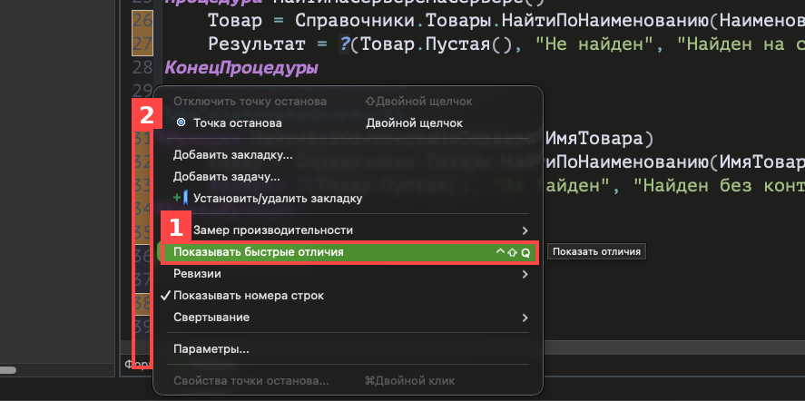
| № | Что это |
|---|---|
| 1 | «Показывать быстрые отличия» — включает и выключает подсветку |
| 2 | Подсветка изменённых строк у номеров |
5. Практика А
Кнопки «Остаток» и «Очистить» в песочнице. Без раздела 2.
- Кнопка «Очистить»: очищает поля
НаименованиеиРезультат. Счётчик вызовов не должен расти. - Кнопка «Остаток»: находит товар по наименованию и выводит его остаток из регистра
ОстаткиТоваровна сегодня: «Остаток Мышь: 19». Счётчик +1 за нажатие. Форма серверу не нужна. - Остаток — через виртуальную таблицу
Остатки(как в 4.4а, практика А). - Сообщение «Товар не найден», если товара нет, — через
Вывести.
Проверка: сформируй отчёт ОстаткиНаДату на сегодня — остатки Мыши и Ноутбука должны совпасть. Машина — «Товар не найден».
Подсказка к выбору: у каждой новой процедуры сначала ответь себе, нужна ли ей база и нужна ли ей форма.
6. Практика Б
Сквозной проект — общая задача 5.1 и 5.2. Выполняется после задачи 5.2: там будет форма документа и команды на ней.
Кнопка «Заполнить цены» в форме документа РасходТовара.
Что должно получиться:
- на форме документа кнопка «Заполнить цены»;
- по нажатию в каждой строке табличной части
ТоварыполеЦеназаполняется из регистра сведенийЦеныТоваровна дату документа,Суммапересчитывается; - строки, для товара которых цены нет, не меняются; пользователь получает сообщение, по каким товарам цены не найдены;
- обращение к регистру — на сервере, один вызов на нажатие, сколько бы строк ни было.
Проверка:
- документ с двумя строками — после нажатия цены совпадают с
ЦеныТоваровна дату документа; - счётчик вызовов +1 за нажатие;
- поменяй дату документа на день до первой цены — получишь сообщение про ненайденные цены.
Ответь себе: почему здесь, скорее всего, подойдёт &НаСервере, а не &НаСервереБезКонтекста, хотя по умолчанию мы выбираем «без контекста»? И как можно сделать то же «без контекста» — что придётся передавать и возвращать?
Коммиты по задаче 5.1:
5.1: обработка ПесочницаКлиентСервер — форма, реквизиты Наименование и Результат, три команды и каркас обработчиков
5.1: три способа вызова — на клиенте, на сервере, на сервере без контекста
5.1: модуль формы по областям, процедура Вывести через СообщениеПользователю
7. Справочник
Директивы — коротко
| Директива | Где выполняется | Видит форму | Доступ к базе |
|---|---|---|---|
&НаКлиенте |
Клиент | ✓ | ✗ |
&НаСервере |
Сервер | ✓ | ✓ |
&НаСервереБезКонтекста |
Сервер | ✗ | ✓ |
&НаКлиентеНаСервереБезКонтекста |
И там, и там | ✗ | Только когда вызвана на сервере |
Счётчик вызовов
Строка внизу окна предприятия: «Текущие вызовы: … Накопленные вызовы: …». Показывает обращения к серверу с начала сеанса. Растёт от открытия форм и от серверных вызовов из кода.
Модуль формы — стандартные области 👀
В типовых модуль формы обычно идёт в таком порядке:
| Область | Что в ней |
|---|---|
ОбработчикиСобытийФормы |
ПриСозданииНаСервере, ПриОткрытии и т. п. — события самой формы |
ОбработчикиСобытийЭлементовШапкиФормы |
ПриИзменении полей и т. п. |
ОбработчикиКомандФормы |
Обработчики кнопок |
СлужебныеПроцедурыИФункции |
Всё вспомогательное |
Передача параметров 👀
| Запись | Как передаётся | Может ли процедура изменить переменную вызвавшего |
|---|---|---|
Процедура Х(Параметр) |
Ссылкой | Да |
Процедура Х(Знач Параметр) |
Копией | Нет |
Что может передаваться между клиентом и сервером 👀
Параметры и возвращаемые значения серверных вызовов должны быть простыми: строки, числа, даты, булево, ссылки, структуры и массивы из них. Объекты вроде ДокументОбъект или Запрос на клиент не передаются — это пригодится в 5.2.